| 日付 | 2010年6月26日（土） |
|---|---|
| 山域 | 丹沢 |
| メンバー | 友人（男1女1） |
| 山行形態 | 日帰り |
| アクセス | 電車、バス |
| ルート (Map) | 西丹沢自然教室→畦ヶ丸→大滝峠上→大滝橋 |
毎年のことだが、この季節は行ける山が少ない。
梅雨のど真ん中の一日、天気はよくないが雨は降らなさそうなので、
丹沢の畦ヶ丸に行ってみることにする。
丹沢の有名な山では唯一登り残している山だ。
8:38 西丹沢自然教室バス停到着。標高545m。
建物の裏にある吊橋が登山道入口だ。
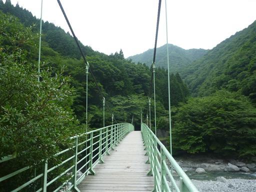
登山道は沢沿いについている。白い河原がきれいだ。
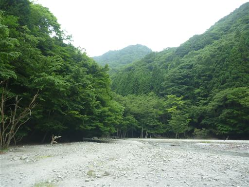
水たまりを見ると、無数のオタマジャクシが固まっている。
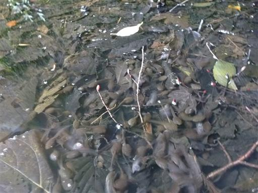
下棚の滝。滝の間近で見られるので迫力がある。
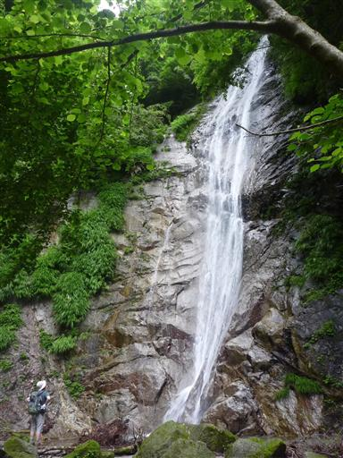
沢沿いの登山道が続く。暑い季節だが沢沿いは結構涼しい。
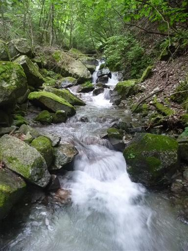
岩壁の中にやたら赤い部分がある。まるでレバーのようだ。
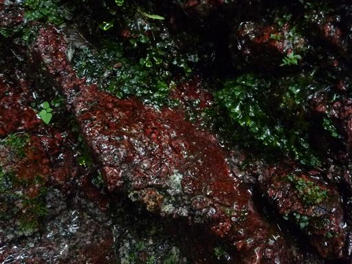
本棚の滝に到着。こちらの滝も間近で見ることができる。
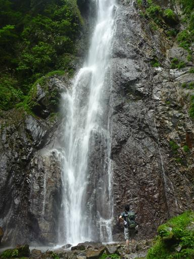
落差はそこそこある。以前、西丹沢でキャンプをしたときに、ここまでは来たことがある。
今日はここから畦ヶ丸の山頂をめざす。
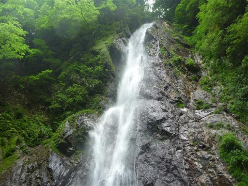
途中で沢から離れて尾根道になる。途端に気温はだいぶ上がる。
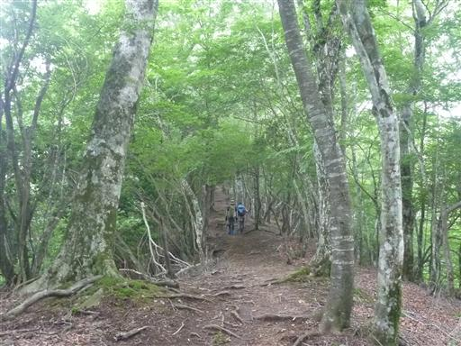
山の中はもう完全に雲に覆われている。展望は全くない。
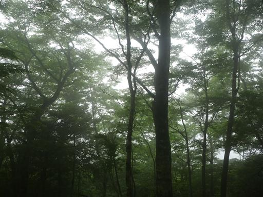
11:07 畦ヶ丸山頂到着。標高1292m。
山頂で昼食をとろうと思ったが、虫が多いのですぐに退散する。
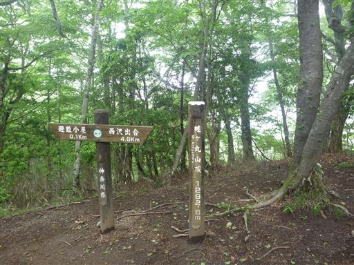
山頂から少し下ったところに畦ヶ丸避難小屋がある。
この付近は比較的虫が少ないので、ここで小休止して昼食をとることにする。
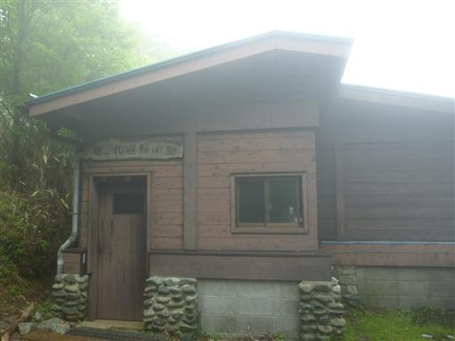
倒木の上にシダがたくさん生えている。
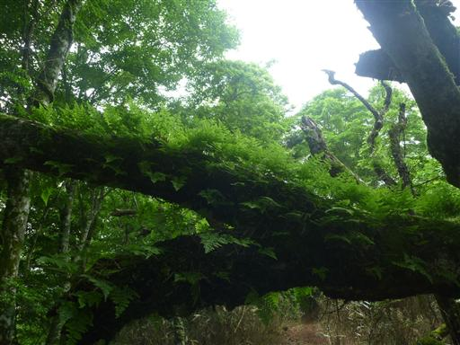
キノコや苔も生えている。この倒木は多くの植物の土台になっている。
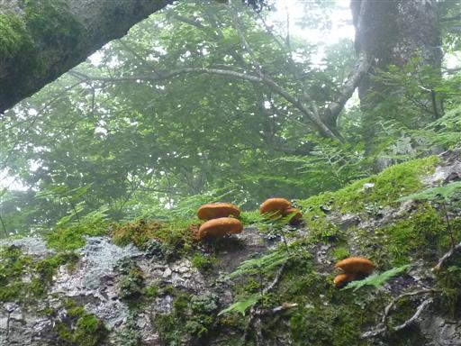
こちらのキノコは笠が逆向きになっている。雨が降ったら水がたまりそうだ。
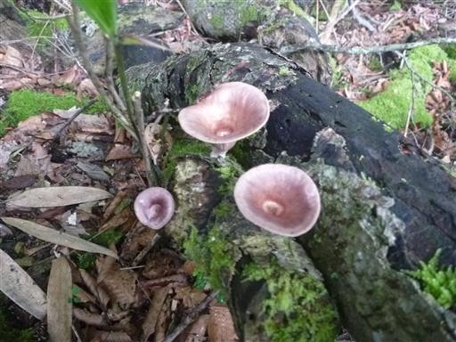
久々に登山道で蛇を発見。人に気付いたのか少し警戒している。
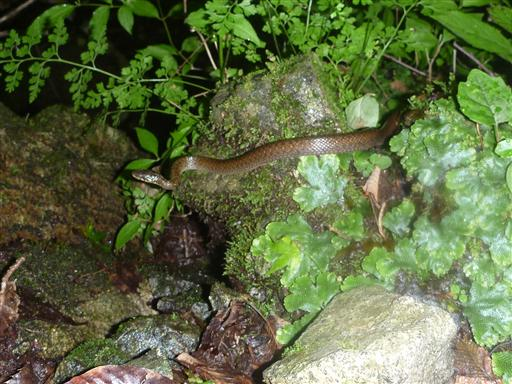
湿り気が多い登山道。岩には無数の苔が張り付いている。
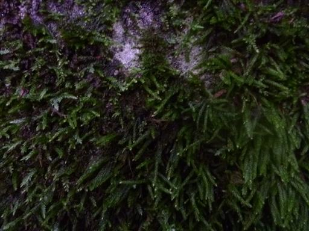
下山に使った道は東海自然歩道上についている。
標識は「東海自」と「然歩道」に分かれているため、一見何のことやら良く分からない。
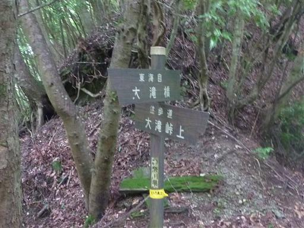
足元に美しい滝が流れ落ちている。特に標識が無いので名前は分からないが、
この沢は大滝沢というので、これが大滝なのだろうか？
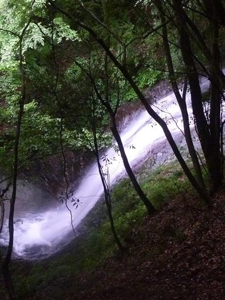
少し下流から沢沿いの細い踏跡を辿って滝に近づいてみる。
滝にロープが一本ぶら下がっていて、それを伝って登れるようになっている。
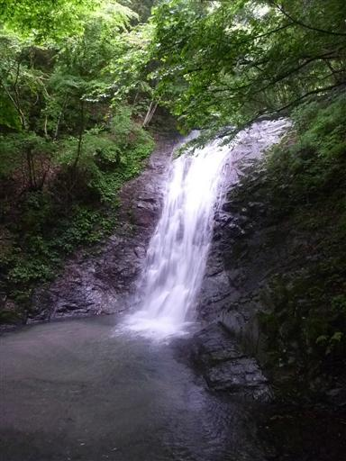
この辺りの沢には無数のカエルが住んでいる。
登りで見たオタマジャクシの数を考えれば、たくさんカエルがいるのもうなずける。
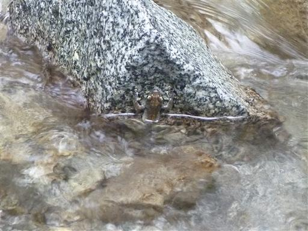
水の流れが弱いところでは、川床の砂が美しい縞模様を描いている。
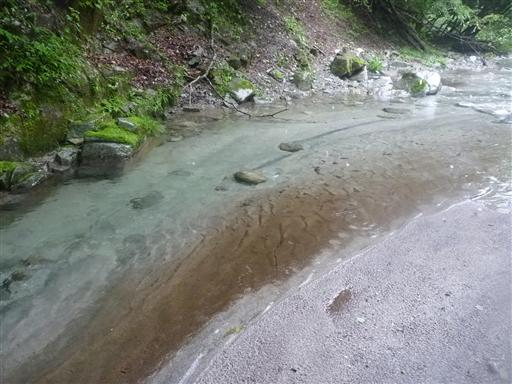
倒木に生える白いキノコ。少し雨が降ってきて元気いっぱいのキノコだが、少し気持ち悪い。
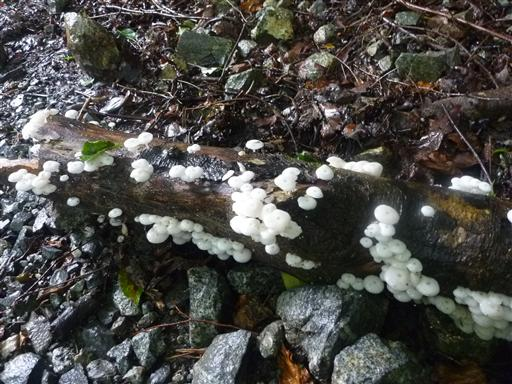
14:35 大滝橋バス停到着。標高450m。
展望は全くなかったが、涼しい沢沿いの道でたくさんの動植物に出会えたハイキングだった。
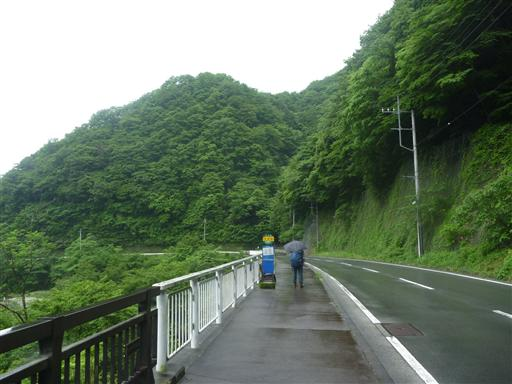